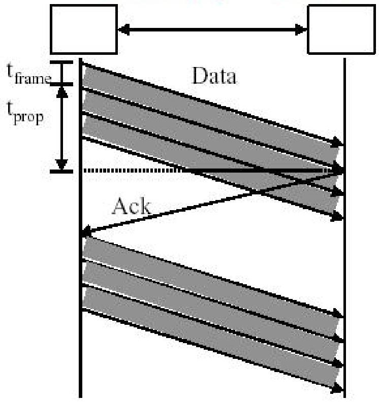

The Data Link Layer¶
该文档是计算机网络中数据链路层的学习资料，主要涵盖数据链路层设计问题、差错检测与纠正、基本数据链路协议、滑动窗口协议和典型数据链路协议等内容，用于帮助理解数据链路层原理及应用。
- 数据链路层设计问题
- 服务提供：为网络层提供虚拟通信服务，包括无确认无连接、有确认无连接和有确认面向连接服务 ，以满足不同场景需求。
- 功能实现：实现帧定界、差错控制和流量控制。帧定界通过字符计数、字节填充、比特填充和物理层编码违例等方法确定帧边界；差错控制借助定时器和序号确保帧正确传输；流量控制采用反馈式或速率式控制方式避免接收方过载。
- 差错检测与纠正
- 纠错码：依据汉明距离检测和纠正错误。汉明码通过特定校验位设置纠正单比特错误，卷积码和里德 - 所罗门码等分别在不同场景用于差错纠正，擦除码可实现可靠云存储，RAID5提高磁盘存储可靠性。
- 检错码：奇偶校验可检测奇数个位翻转错误，多项式码（CRC）能有效检测多种错误，其性能与生成多项式相关，不同生成多项式有国际标准，可通过硬件或软件计算。哈希函数与CRC相关，不同哈希函数校验能力不同，应用于数据校验和安全领域。
- 基本数据链路协议：包括无限制单工协议、停等协议和有噪声信道单工协议。停等协议通过设置序号和定时器处理错误和重复帧问题，但在长延迟高带宽链路效率低。
- 滑动窗口协议
- 基本概念：发送窗口控制未确认帧数量，接收窗口控制可接收帧范围，窗口大小可变。捎带确认机制用于全双工通信提高效率。
- 协议类型：一位滑动窗口协议简单但效率低；回退N步协议基于滑动窗口，接收窗口为1，出错时重传错误帧及后续帧，发送窗口最大值受序号空间限制；选择重传协议仅重传出错帧，接收方需大缓冲区，发送窗口和接收窗口大小之和不超序号范围的一半。
- 典型数据链路协议
- HDLC：有多种站类型和链路配置，帧格式包含控制字段区分帧类型，如I帧传输数据、S帧用于流量和差错控制、U帧进行链路管理，通过不同帧实现链路初始化、数据传输和断开等操作。
- SLIP：采用字符填充法，存在无差错控制、仅支持IP等问题。
- PPP：是互联网数据链路层协议，包含多个子层，支持多种物理层接口，具备差错检测、认证和多协议支持等功能，通过LCP协商协议选项，CHAP用于认证。
Data Link Layer Design Issues¶
这部分内容主要围绕数据链路层设计问题展开，涵盖数据链路层的目标、为网络层提供的服务、帧定界方法、差错控制和流量控制等方面，具体总结如下：
- 数据链路层设计目标：研究实现两台相邻机器间可靠、高效通信的算法。相邻机器通过类似导线的通信信道连接，数据按发送顺序传输。

- 为网络层提供的服务
- 无确认无连接服务：如以太网，适用于误码率低的环境，实时性要求高的流量（如语音），上层负责错误恢复。
- 有确认无连接服务：在不可靠信道（如无线系统）中有用，发送方可知帧是否正确到达，未按时到达则重发。
- 有确认有连接服务：适用于长距离、不可靠链路（如卫星信道、长途电话线路），数据链路层的确认是优化而非必需，需使用定时器、序号和建立连接。

- 帧定界：在点到点链路传输中，接收方需识别构成帧的比特集。常见方法包括：
- 字符记数法：利用帧头字段指定帧内字符数，如DEC的DDCMP协议，但错误可能导致帧定界出错。

- 字节填充法：用特殊字节（FLAG）标识帧的起始和结束，如BISYNC、PPP协议，数据中出现特殊字节时进行填充。
- 比特填充法：以特殊比特模式（01111110）作为帧的起始和结束标志，发送方遇连续5个1时插入0，接收方还原数据。
- 物理层编码违例法：如IEEE 802.3，利用特定编码规则中不表示数据的信号（如电压恒高或恒低、特定非数据编码）作为定界符。
- 字符记数法：利用帧头字段指定帧内字符数，如DEC的DDCMP协议，但错误可能导致帧定界出错。
- 差错控制：确保所有帧按序准确交付到目的地，为发送方提供接收方的反馈。硬件故障可能导致帧丢失，通过管理定时器和序号，保证每个帧仅交付一次。
- 流量控制
- 基于反馈的流量控制：接收方给予许可（隐式或显式）前，发送方禁止发送帧。
- 基于速率的流量控制：限制发送方传输数据的速率。
Elementary Data Link Protocols¶
假设部分（Some of the assumptions） - 层独立性：指出物理层、数据链路层和网络层是相互独立的进程。在网络模型中，这些层各自负责不同的功能，这种独立性有助于模块化设计和维护。 - 数据传输需求：机器A想要通过可靠的、面向连接的服务向机器B发送一长串数据。面向连接的服务意味着在数据传输前会先建立连接，传输过程中保证数据的有序和完整性，传输完成后断开连接，常用于对数据准确性要求高的场景。 - 机器稳定性：假设机器不会崩溃，这是为了简化数据链路层协议的讨论，排除因机器故障带来的复杂情况。
库过程部分（Library procedures） - 等待事件（wait_for_events）：用于等待特定事件的发生，比如等待数据到达或某个操作完成的信号。 - 网络层交互（from_network_layer / to_network_layer）：表示与网络层进行数据的接收和发送操作，实现数据链路层与网络层之间的通信。 - 物理层交互（to_physical_layer / from_physical_layer）：负责与物理层进行数据的传输和接收，将数据转换为适合物理介质传输的形式或反之。 - 定时器操作（timer operations）：用于设置和管理定时器，比如超时重传机制中就会用到定时器来控制等待响应的时间。 - 网络层启用与禁用（enable_network_layer / disable_network_layer）：可以控制网络层的工作状态，在某些情况下可能需要暂停或恢复网络层的功能。 - 序列号操作（sequence number operation）：对数据进行编号，以便在接收端进行数据的排序和确认，保证数据按顺序正确接收。
这张图片展示了一些与协议相关的定义，这些定义通常用于网络通信或类似的编程场景中，并且是用C语言编写的，位于 protocol.h 文件中。以下是对这些定义的解释：
-
#define MAX_PKT 1024：这是一个预处理指令，定义了一个常量MAX_PKT，其值为1024，表示数据包的大小（以字节为单位）。 -
typedef enum {false, true} boolean;：使用typedef定义了一个新的数据类型boolean，它本质上是一个枚举类型，包含两个值false和true，用于表示布尔值。 -
typedef unsigned int seq_nr;：定义了一个新的数据类型seq_nr，它是无符号整数类型，用于表示序列编号或确认编号。 -
typedef struct {unsigned char data[MAX_PKT];} packet;：定义了一个结构体类型packet，它包含一个无符号字符数组data，大小为MAX_PKT，用于表示数据包。 -
typedef enum {data, ack, nak} frame_kind;：定义了一个枚举类型frame_kind，包含三个值data（数据帧）、ack（确认帧）和nak（否认帧），用于表示帧的类型。 -
typedef struct {...} frame;：定义了一个结构体类型frame，包含以下成员： frame_kind kind;：表示帧的类型，取值为frame_kind枚举中的一个值。seq_nr seq;：表示帧的序列编号。seq_nr ack;：表示确认编号。packet info;：表示网络层的数据包。
这些定义为后续的协议实现提供了基础的数据结构和类型，有助于组织和管理网络通信中的数据传输和确认机制 。
这是一段用C语言编写的网络通信相关的代码片段，主要定义了一系列函数和一个宏定义，以下是对它们的介绍：
函数说明
wait_for_event(event_type *event)：等待一个事件发生，并在事件发生时返回其类型。from_network_layer(packet *p)：从网络层获取一个数据包，以便在信道上传输。to_network_layer(packet *p)：将来自入站帧的信息传递到网络层。from_physical_layer(frame *r)：从物理层获取一个入站帧，并将其复制到r中。to_physical_layer(frame *s)：将帧传递到物理层进行传输。start_timer(seq_nr k)：启动时钟并启用超时事件，seq_nr可能是序列号类型。stop_timer(seq_nr k)：停止时钟并禁用超时事件。start_ack_timer(void)：启动一个辅助定时器并启用确认超时事件。stop_ack_timer(void)：停止辅助定时器并禁用确认超时事件。enable_network_layer(void)：允许网络层引发network_layer_ready事件。disable_network_layer(void)：禁止网络层引发network_layer_ready事件。
宏定义
#define inc(k) if (k < MAX_SEQ) k = k + 1; else k = 0 ：这是一个宏 inc，用于对变量 k 进行循环递增。当 k 小于 MAX_SEQ（最大序列号）时，k 自增 1；当 k 达到 MAX_SEQ 时，将 k 重置为 0。
这些函数和宏通常用于实现网络协议栈中数据链路层或网络层的功能，比如处理数据帧的收发、定时器管理以及与网络层的交互等。
Protocol 1: Utopia（理想化协议）¶
这段代码实现的是 无限制单工协议（Unrestricted Simplex Protocol），用于单向数据传输（仅发送方到接收方），假设通信信道无错误，接收方处理能力无限。以下是代码解析：
1. 协议核心逻辑¶
- 单向传输：仅支持从发送方向接收方传输数据，无反向通信。
- 无错误处理：假设信道绝对可靠，无需校验、重传等机制。
2. 发送方代码（sender1 函数）¶
- 循环发送：通过
while (true)无限循环，持续从网络层获取数据并发送。 from_network_layer(&buffer)：从网络层获取待发送的数据包，存入buffer。s.info = buffer：将数据包内容复制到帧s的数据字段。to_physical_layer(&s)：将封装好的帧发送到物理层，通过信道传输。
3. 接收方代码（receiver1 函数）¶
- 循环接收：通过
while (true)无限等待接收数据。 wait_for_event(&event)：等待事件（此处仅可能是frame_arrival，即帧到达）。from_physical_layer(&r)：从物理层获取到达的帧r。to_network_layer(&r.info)：将帧中的数据提取出来，交付给网络层处理。
4. 协议假设¶
- 信道无差错，无需处理丢帧、误码等问题。
- 接收方处理速度无限快，不会出现数据积压。因此发送方无需流控，直接无限循环发送。
总结：该协议是最简单向传输模型，聚焦基础数据传输流程，忽略实际网络中的错误处理、流量控制等复杂机制，常用于理论教学或极简单场景模拟。
Protocol 2: Stop-and-Wait Protocol for a Error-free Channel¶
这段代码实现了 单工停等协议（Simplex Stop-and-Wait Protocol），用于控制发送方与接收方的单向数据传输，避免发送方发送数据过快导致接收方处理不及。以下是代码解析：
1. 协议背景¶
- 假设通信信道无差错，但接收方缓冲区和处理速度有限，需显式控制发送方流量。
- 发送方每发送一帧后，必须等待接收方反馈才能继续发送，确保接收方有足够时间处理数据。
2. 发送方代码（sender2 函数）¶
- 循环逻辑：通过
while (true)持续运行。 from_network_layer(&buffer)：从网络层获取待发送的数据包。s.info = buffer：将数据包复制到帧s中。to_physical_layer(&s)：将帧发送到物理层。wait_for_event(&event)：阻塞等待事件（此处仅可能是接收方的反馈事件），确保发送方不会连续发送数据，实现“停等”机制。
3. 接收方代码（receiver2 函数）¶
- 循环逻辑：通过
while (true)持续监听。 wait_for_event(&event)：等待帧到达事件（仅frame_arrival）。from_physical_layer(&r)：从物理层获取到达的帧。to_network_layer(&r.info)：将帧中的数据传递给网络层处理。to_physical_layer(&s)：向发送方发送一个“虚拟帧”（dummy frame），作用是唤醒发送方，允许其继续发送下一帧，实现流量控制的反馈。
4. 核心机制总结¶
- 停等策略：发送方发送一帧后暂停，等待接收方处理完成并返回反馈（虚拟帧），再继续发送，避免接收方因数据过载无法处理。
- 单向传输：仅支持从发送方到接收方的单向数据流动，接收方不传输真实数据，仅通过虚拟帧控制发送节奏。
Protocol 3: A Simplex Protocol for a Noisy Channel¶
这张图主要描述了数据链路层中发送数据（DATA）并等待确认（ACK）机制下的两种故障场景，具体解释如下：
解决方案为“发送DATA后等待ACK”，围绕该机制分析两种故障情况：
Case 1：接收方故障（Failed on receiver）¶
- 正常流程：A的网络层将分组1交给数据链路层，B正确接收分组并传递给网络层，随后B向A发送ACK。
- 故障发生：
- ACK在传输中完全丢失。
- A的数据链路层因未收到ACK而超时，触发重传机制，重新发送帧。
- 重传的重复帧到达B，引发重复帧处理问题（图中未展开后续处理）。
- 该场景体现停等协议中“ACK丢失”导致的发送方重传行为。
Case 2：发送方故障（Failed on Sender）¶
仅提及“延迟的ACK”（A delayed ACK），暗示另一种故障场景：ACK未丢失但延迟到达，可能导致发送方因超时而重传，后续需处理延迟ACK与重传帧的逻辑冲突（图中未详细展开）。
总结：图中通过两个案例，分析数据传输中ACK相关的故障场景，涉及停等协议的超时重传机制及重复帧、延迟ACK等问题。
- 序列号的核心作用
-
区分新帧与重传帧：在每个帧的头部添加序列号，接收方通过序列号判断接收到的帧是新发送的帧还是因超时重传的帧，避免重复处理或误判。
-
链路层（停等协议）使用1比特的原因
-
停等协议中，发送方发送一帧后需等待确认，未收到确认才重传。此时只需区分两种状态：当前发送的帧（如编号0）和重传的帧（如编号1）。1比特可表示2个编号（0和1），形成循环编号空间，足以满足“发送-等待确认-重传”的简单机制，无需更多比特。
-
传输层需要更大编号空间的原因
- 传输层场景更复杂（如非停等协议），可能同时有多个未确认的分组在网络中传输。1比特的编号空间（仅2个编号）无法满足多分组序号区分需求，易导致序号混淆（如新旧分组序号重复无法分辨）。例如TFTP（简单文件传输协议）使用16比特编号，可支持更大范围的序号，适应传输层多分组并发、复杂丢包重传的场景。
代码¶
这段代码实现了一个简单的数据发送端（Sender）的逻辑，主要功能是从网络层获取分组，进行发送，并处理可能出现的错误情况。
- 总结内容
- 初始化时，从网络层获取一个分组放入缓冲区
buffer，并发送该分组，同时启动定时器。 - 进入事件等待循环，等待不同事件发生：
- 若收到坏帧（校验和错），则重发缓冲区中的数据，并重新启动定时器。
- 若定时器超时，同样重发缓冲区中的数据，并新启动定时器。
- 若收到校验和正确的帧，检查确认（
ack）序号是否正确：- 若
ack序号正确，关闭旧定时器，更新发送序号seq_nr，从网络层获取下一个分组放入缓冲区，然后发送新分组并启动新定时器。 - 若
ack序号不正确，重发缓冲区中的数据，并重新启动定时器 。
- 若
- 处理完事件后，跳转到
label1继续等待下一个事件。
- 初始化时，从网络层获取一个分组放入缓冲区
- 解释
seq_nr=0：seq_nr是发送序号，初始值设为0。在数据发送过程中，它用于标识发送的分组顺序。每成功发送一个分组并收到正确的确认（ack）后，seq_nr会增加（通过inc(seq_nr)操作），以标识下一个要发送的分组。这样接收方可以根据seq_nr判断分组是否按顺序到达，发送方也能依据ack中的序号确认哪些分组已被正确接收，从而决定后续操作，如继续发送新分组还是重发旧分组。初始化为0表示从第一个分组开始发送。
这是一段实现Protocol 3（发送端）的C语言代码，Protocol 3允许在不可靠信道上进行单向数据流传输。下面是对代码的详细解释：
发送方¶
1. 宏定义和类型定义¶
| C | |
|---|---|
#define MAX_SEQ 1：定义了最大序号为1，这是Protocol 3的要求。
- typedef enum {frame_arrival, cksum_err, timeout} event_type;：定义了一个枚举类型event_type，用于表示可能出现的事件，包括帧到达（frame_arrival）、校验和错误（cksum_err）和超时（timeout）。
- #include "protocol.h"：包含名为protocol.h的头文件，其中可能定义了代码中使用到的其他类型、函数和宏。
2. 发送函数 sender3¶
next_frame_to_send：表示下一个要发送帧的序号。
- s：用于构建和处理帧的临时变量。
- buffer：用于存储从网络层获取的待发送分组。
- event：用于存储发生的事件类型。
- 初始化：
- next_frame_to_send = 0;：将下一个要发送帧的序号初始化为0。
- from_network_layer(&buffer);：从网络层获取第一个待发送的分组，存储到buffer中。
- 循环发送：
- while (true)：进入一个无限循环，持续发送数据帧。
- s.info = buffer; 和 s.seq = next_frame_to_send;：将待发送分组放入帧s中，并设置帧的序号。
- to_physical_layer(&s);：将构建好的帧发送到物理层。
- start_timer(s.seq);：启动一个定时器，用于在没有及时收到确认时重发帧。
- wait_for_event(&event);：等待事件发生，事件类型可能是帧到达、校验和错误或超时。
- 事件处理：
- 当事件为frame_arrival（收到帧）时：
- from_physical_layer(&s);：从物理层获取收到的帧，该帧包含确认信息。
- 如果收到的帧中的确认序号（s.ack）与当前要发送的帧序号（next_frame_to_send）相等：
- stop_timer(s.ack);：关闭对应的定时器。
- from_network_layer(&buffer);：从网络层获取下一个待发送的分组。
- inc(next_frame_to_send);：更新下一个要发送帧的序号，这里的inc函数可能是用于切换序号（因为MAX_SEQ为1，所以序号在0和1之间切换）。
总体来说，这段代码实现了在不可靠信道上的单向数据传输，通过序号和定时器来处理数据帧的发送和确认，确保数据能够可靠地传输到接收端。
这是一段C语言代码，实现了Protocol 3中数据接收端（receiver3）的功能，遵循带重传的肯定确认协议（PAR）。以下是对代码的详细解释：
接收方¶
1. 函数定义和变量声明¶
-receiver3 是接收端的函数。
- frame_expected 用于记录期望接收到的数据帧序号。
- r 用于存储从物理层接收到的帧，s 用于构建和发送确认帧。
- event 用于存储发生的事件类型，其类型为之前定义的 event_type（可能包含 frame_arrival、cksum_err 等）。
2. 初始化¶
| C | |
|---|---|
frame_expected 初始化为0，表示接收端一开始期望接收到序号为0的数据帧。
3. 主循环¶
进入一个无限循环，持续等待事件发生。wait_for_event(&event) 函数会阻塞程序，直到有事件出现，并将事件类型存储在 event 变量中。可能的事件类型注释中提到有 frame_arrival（帧到达）和 cksum_err（校验和错误）。
4. 事件处理（帧到达情况）¶
| C | |
|---|---|
frame_arrival（接收到有效帧）时：
- from_physical_layer(&r);：从物理层获取接收到的帧，存储到 r 中。
- 检查接收到帧的序号 r.seq 是否与期望的序号 frame_expected 相等：
- 如果相等，说明收到了期望的数据帧，to_network_layer(&r.info); 将帧中的数据部分传递给网络层进行进一步处理。然后调用 inc(frame_expected) 函数，更新期望接收的下一个数据帧的序号（由于 MAX_SEQ 为1，这里序号在0和1之间切换）。
- 无论接收到的帧序号是否符合期望，都会构建确认帧：s.ack = 1 - frame_expected; 确定确认帧中的确认序号（与期望序号相反，用于告知发送端），然后 to_physical_layer(&s); 将确认帧发送回物理层，从而反馈给发送端。
5. 协议说明¶
图片下方文字说明该代码实现的是带重传的肯定确认协议（PAR），用于在不可靠的信道上实现可靠的数据传输，接收端通过检查帧序号、传递数据和发送确认帧来确保数据接收的正确性和有序性。
定时器¶
Timer（定时器）是发送方用来设定一个特定时间段的机制。在数据发送过程中，当发送方发出一个数据帧时，它会启动一个定时器。这个定时器从启动那一刻开始计时，当计时达到预先设定的时间长度，就会触发Timeout（超时）事件。
Timeout（超时）指的是定时器设定的时间间隔已到，但发送方尚未收到接收方对于已发送数据帧的确认信息。在这种情况下，发送方会认为数据传输可能出现了问题，比如数据帧在传输过程中丢失，或者接收方的确认帧在返回途中丢失等。
当超时时间过短，发送方可能在接收方的确认帧还在传输途中时，就误以为数据传输失败，从而重新发送数据帧。这些额外发送的数据帧虽然不会影响协议的正确性，但会降低系统的性能。
Sliding Window Protocols¶
这段文字主要介绍了全双工数据传输中的捎带确认（Piggybacking）机制，以及发送窗口和接收窗口的概念，还提及了滑动窗口协议的相关类型。
- 捎带确认：在全双工数据传输场景下，存在两种实现方式，一是用两个独立信道分别进行单向数据传输，二是同一电路双向传输数据。捎带确认是指当数据帧到达时，接收方不立即发送单独的控制帧，而是等待网络层传递下一个数据包，将确认信息（ACK）附加在出站数据帧的帧头
ack字段中。 - 发送窗口和接收窗口：发送窗口用于控制未确认帧的数量，发送方会维护一组与未确认帧对应的序列号，这些帧处于发送窗口内，且发送窗口有最大尺寸限制；接收方也有接收窗口，用于限定可接收帧的范围。发送/接收窗口大小既可以固定，也能随着帧的发送和接收动态变化。
- 滑动窗口协议：包括一位滑动窗口协议、回退N步协议和选择重传协议，且提到了不同协议在效率、复杂度和缓冲区需求方面存在差异。
Sliding Window of Size 1¶

Protocol 4: One-Bit Sliding Window¶
这张图片介绍了Protocol 4（四位滑动窗口协议）的相关概念，包括发送窗口、发送方和接收方的序号以及发送缓冲区等内容。
- 发送窗口：明确发送窗口最大值为1，意味着发送方在未收到确认信息前，最多只能发送1个帧。
- 发送方向序号：有一个序号序列，其中
next_frame_to_send（下一个要发送的帧序号）指向序号为1的位置，表示当前准备发送序号为1的帧。发送缓冲区buffer中缓冲的是编号为next_frame_to_send的帧，即序号为1的帧 。 - 接收方向序号：存在另一个序号序列，
frame_expected（期望接收的帧序号）指向序号为0的位置，说明接收方当前期望接收到序号为0的帧。
One-Bit Sliding Window Protocol¶
这段代码实现了一个双向滑动窗口协议（Protocol 4），用于在不可靠的通信信道上实现可靠的数据传输。以下是对代码的详细解释：
1. 整体框架和宏定义¶
| C | |
|---|---|
/* Protocol4( siding window is bidlrectional, */表明这是双向滑动窗口的Protocol 4协议实现代码。
- #define MAX_SEQ 1：定义了最大序号为1，这意味着在这个协议中，帧的序号只有0和1两种 。这限制了序号空间，简化了序号管理，但也对协议的实现方式有一定约束。
- typedef enum {frame_arrival, cksum_err, timeout} event_type;：定义了一个枚举类型event_type，用来表示在数据传输过程中可能出现的事件。frame_arrival表示接收到一个正确的帧；cksum_err表示接收到的帧校验和错误；timeout表示发送帧后等待确认时发生了超时。
- #include "protocol.h"：包含名为protocol.h的头文件，这个头文件中可能定义了代码中使用到的其他类型（如seq_nr、packet、frame ）、函数（如from_network_layer、to_physical_layer、inc ）等。
2. 函数定义和变量声明¶
void protocol4 (void)：定义了protocol4函数，它是实现该协议的核心函数。
- seq_nr next_frame_to_send;和seq_nr frame_expected;：seq_nr可能是在protocol.h中定义的一种表示序号的数据类型。next_frame_to_send用于记录下一个要发送的帧的序号，frame_expected用于记录期望接收到的帧的序号，在这个协议中它们的值只能是0或1 。
- packet buffer;：packet可能是在protocol.h中定义的一种表示数据包的数据类型，buffer用于临时存储从网络层获取的数据包，以便将其封装成帧进行发送。
- frame r, s;：frame可能是在protocol.h中定义的表示帧的数据类型，r用于存储从物理层接收到的帧，s用于构建和发送要传输的帧。
- event_type event;：用于存储在数据传输过程中发生的事件类型，取值为前面定义的event_type枚举值。
- 初始化部分：
- frame_expected = 0;：将期望接收到的帧的序号初始化为0，意味着一开始期望接收到序号为0的帧。
- next_frame_to_send=0;：将下一个要发送的帧的序号初始化为0，即开始时先发送序号为0的帧。
- from_network_layer(&buffer);：调用from_network_layer函数从网络层获取一个数据包，并将其存储在buffer中。这个函数的具体实现可能在protocol.h头文件对应的源文件中，它负责从网络层获取需要传输的数据。
- s.info = buffer;：将从网络层获取的数据包赋值给要发送的帧s的info字段，完成将数据包封装到帧中的一部分操作。
- s.ack=1-frame_expected;：计算要发送帧的确认序号（ACK）。因为frame_expected初始值为0，所以1 - frame_expected的值为1，将这个值赋给帧s的ack字段，用于捎带确认信息给对方。
- s.seq = next_frame_to_send;：将下一个要发送的帧的序号（此时为0）赋值给帧s的seq字段，标识该帧的序号。
- to_physical_layer(&s);：调用to_physical_layer函数将构建好的帧s发送到物理层进行传输。
- start_timer(s.seq);：启动一个定时器，用于在规定时间内等待对方的确认。如果在定时器超时前没有收到确认，就会触发超时事件进行重传操作。
3. 事件处理循环¶
while (true)：进入一个无限循环，持续等待和处理各种事件，确保通信过程持续进行。
- wait_for_event(&event);：调用wait_for_event函数等待事件发生，该函数会阻塞程序执行，直到有事件出现，并将发生的事件类型存储在event变量中。
- if (event == frame_arrival)：当事件类型为frame_arrival，即接收到一个正确的帧时，执行以下操作：
- from_physical_layer(&r);：调用from_physical_layer函数从物理层获取接收到的帧，并存储到r中。
- if (r.seq == frame_expected)：检查接收到帧的序号r.seq是否与期望的序号frame_expected相等：
- 如果相等，说明收到了期望的数据帧，to_network_layer(&r.info);将帧中的数据部分传递给网络层进行进一步处理。
- inc(frame_expected);：调用inc函数更新期望接收的下一个数据帧的序号（由于MAX_SEQ为1，这里序号在0和1之间切换）。
- if (r.ack == next_frame_to_send)：检查接收到帧中的确认序号r.ack是否与当前发送方正在等待确认的帧序号next_frame_to_send相等：
- 如果相等，说明之前发送的帧已被正确接收，stop_timer(r.ack);停止对应的定时器，避免不必要的重传。
- from_network_layer(&buffer);：从网络层获取下一个要发送的数据包。
- inc(next_frame_to_send);：更新下一个要发送的帧的序号（在0和1之间切换）。
- s.info = buffer;：将新获取的数据包封装到要发送的帧s的info字段中。
- s.seq = next_frame_to_send;：设置帧s的序号为更新后的next_frame_to_send。
- s.ack=1- frame_expected：计算并设置帧s的确认序号（用于捎带确认给对方）。
- to_physical_layer(&s);：将构建好的帧s发送到物理层进行传输。
- start_timer(s.seq);：启动定时器，等待对方对新发送帧的确认。如果在定时器超时前没有收到确认，会触发超时事件，不过这里代码中未处理超时事件（cksum_err和timeout事件也未处理，可能在后续代码或protocol.h对应的源文件中实现）。
这段代码是一个循环结构，用于持续处理数据帧的接收、确认以及新数据帧的发送，以实现可靠的数据传输，以下是详细解释：
while (true)循环：这是一个无限循环，使程序能够持续运行，不断等待和处理各类事件，确保数据传输过程不会中断。在网络通信场景中，这种持续运行的机制至关重要，能保证通信的连续性，实时处理接收到的数据和发送新的数据。wait_for_event(&event);if (event == frame_arrival)条件判断：用于检查当前发生的事件是否为frame_arrival，即是否成功接收到一个未损坏的数据帧。如果满足该条件，就进入相应的代码块对接收到的帧进行处理；若事件不是frame_arrival（比如是校验和错误cksum_err或超时timeout事件），当前代码块未对其处理，可能在代码的其他部分进行处理。在实际网络通信中，可能会存在各种干扰导致数据帧损坏或丢失，这种条件判断能准确识别正常接收的帧并进行后续处理。from_physical_layer(&r);：从物理层获取接收到的数据帧，并将其存储到r变量中。在网络通信的分层架构中，物理层负责实际的信号传输，链路层需要从物理层获取数据帧进行解析和处理，这一步是链路层处理数据的起点。if (r.seq == frame_expected)条件判断：检查接收到的数据帧的序号r.seq是否与期望接收的帧序号frame_expected一致。如果两者相等，说明收到了期望的数据帧，会执行以下操作：to_network_layer(&r.info);：将数据帧中的数据部分传递给网络层进行进一步处理。在网络通信中，不同的协议层各司其职，链路层负责将数据可靠地传输到对端，当接收到正确的数据帧后，需要将数据传递给上层的网络层，网络层再根据自身的协议规则进行路由、寻址等操作。inc(frame_expected);：更新期望接收的下一个数据帧的序号。结合整体代码逻辑，这里的inc函数可能是将frame_expected在0和1之间切换（因为代码中最大序号为1 ），为接收下一个序号的帧做准备。在滑动窗口协议中，通过这种方式有序地接收数据帧，保证数据的顺序性和完整性。
if (r.ack == next_frame_to_send)条件判断：检查接收到的数据帧中的确认序号r.ack是否与当前发送方正在等待确认的帧序号next_frame_to_send一致。如果一致，说明之前发送的帧已被对方正确接收，执行stop_timer(r.ack);停止对应的定时器，避免因等待超时导致不必要的重传，节省网络资源。在不可靠的网络环境中，数据帧可能会丢失或延迟，定时器用于控制发送方等待确认的时间，当收到正确的确认后停止定时器，可以避免不必要的重传，提高网络传输效率。- 新数据帧的准备与发送：
from_network_layer(&buffer);：从网络层获取下一个要发送的数据包，准备构建新的数据帧进行发送。在发送数据时，需要从上层网络层获取数据，然后封装成链路层的帧格式进行传输。inc(next_frame_to_send);：更新下一个要发送的帧的序号，同样可能是在0和1之间切换。通过更新序号，确保发送的帧序号唯一且有序，便于接收方进行校验和处理。s.info = buffer;：将从网络层获取的数据包存储到要发送的帧s的info字段中，完成数据封装。在链路层，帧包含了各种控制信息和数据信息，info字段用于存放实际要传输的数据。s.seq = next_frame_to_send;：设置要发送帧s的序号为更新后的next_frame_to_send，以便接收方识别。接收方可以根据帧序号判断是否有帧丢失或乱序，从而进行相应的处理。s.ack=1 - frame_expected;：计算并设置帧s的确认序号，用于向对方捎带确认信息，告知对方自己期望接收的帧序号。这种捎带确认的方式可以提高通信效率，减少额外的确认帧传输。to_physical_layer(&s);：将构建好的帧s发送到物理层，通过网络进行传输。物理层负责将链路层的帧转换为实际的信号在物理介质上传输。start_timer(s.seq);：启动定时器，开始计时，等待对方对新发送帧的确认。若在定时器超时前未收到确认，可能会触发重传机制（当前代码未展示超时处理部分），以保证数据可靠传输。定时器是保证数据可靠传输的重要机制，在规定时间内未收到确认，就认为数据可能丢失，从而进行重传。
Protocol Using Go Back N¶

Pipelining & Error Recovery¶
这张图片对比展示了数据链路层中两种不同的可靠传输协议在遇到传输错误时的处理机制，分别是回退N步协议（Go - Back - N）和选择重传协议（Selective Repeat）。
回退N步协议（图a）¶
- 传输与确认过程：
- 发送方从左到右依次发送编号为0、1、2等的数据帧。接收方成功接收到0号帧和1号帧后，分别发送Ack 0和Ack 1作为确认。
- 当发送2号帧时出现错误（标记为E），接收方无法正确接收该帧。在错误发生后，发送方继续发送3、4、5、6、7、8号帧。
- 错误处理机制：
- 由于2号帧未得到确认，接收方的数据链路层会丢弃后续接收到的3 - 8号帧（标记为D）。
- 发送方设置了一个超时时间间隔（Timeout interval），当超过这个时间仍未收到2号帧的确认时，发送方会从2号帧开始，重传所有未被确认的帧，也就是重新发送2、3、4、5、6、7、8号帧。
- 接收方正确接收重传帧后，发送相应的确认帧（Ack 2、Ack 3等），发送方继续后续的传输（如发送9号帧）。
选择重传协议（图b）¶
- 传输与确认过程：
- 同样，发送方先发送0、1、2等数据帧，接收方收到0号和1号帧后，发送Ack 0和Ack 1。
- 2号帧传输出现错误（标记为E），接收方检测到错误后，发送Nak 2（否定确认）告知发送方2号帧接收失败。
- 错误处理机制：
- 与回退N步协议不同，选择重传协议中，接收方会缓存后续正确到达但顺序不对的帧，例如3、4、5号帧。
- 发送方收到Nak 2后，仅重传2号帧。当2号帧正确到达后，接收方按照顺序处理之前缓存的帧，并对所有正确接收的帧发送确认帧（Ack 1、Ack 2、Ack 5等）。
- 发送方继续发送后续的6、7、8等帧，整个传输过程继续进行。
总体而言，回退N步协议在出现错误时会重传错误帧及后续所有帧，而选择重传协议只重传出错的帧，并通过缓存机制处理顺序错乱但正确的帧，在某些情况下能更有效地利用网络资源，提高传输效率。
该内容主要围绕回退N步（Go Back N）协议展开，涵盖协议基本原理、错误处理、确认机制、窗口大小、协议改进及定时器相关内容。
1. 基本原理：基于滑动窗口机制，接收窗口大小为1，通过窗口控制未确认帧的数量。
2. 错误处理
- 数据帧损坏：接收方检测到帧错误时，丢弃该帧及后续所有帧，直到正确接收到错误帧；发送方在超时后重传错误帧及后续所有帧。
- ACK帧损坏：若ACK帧丢失，由于ACK具有累积性，后续正确的ACK可能在发送方超时前到达，此时之前丢失的ACK错误可忽略；若发送方超时，则重传相应帧及后续所有帧。
3. 确认机制（ACK）：ACK是累积的，例如接收方B收到Frame0和Frame1后未及时回送ACK，收到Frame2后回送ACK2 ，若ACK2在发送方对Frame0的超时前到达，那么ACK0和ACK1的错误可忽略。
4. 窗口大小
- 最大发送窗口大小：以3比特序号为例，若发送窗口设为8会出现序号重叠问题，所以发送窗口最大值为7。发送方发完窗口内所有帧且接收方正确接收后，接收窗口向前推移，需保证发送窗口与接收窗口在序号上不重叠。
- 判断序号位置：判断序号b是否落在窗口(a,c)内，分a到c不回绕（b位于a~c之间 ）和a到c回绕（b位于a~7或0~c - 1 ）两种情况，对应不同的判断条件。 5. 协议改进
- 设置ACK帧和ACK定时器：当发送数据量不是源源不断的分组流，无法及时搭载ACK时，发送短的ACK帧；有用于回送ACK的定时器操作和数据重传所用定时器操作，且两者有区别。
- NAK帧：可激发重传，无需等到超时。
6. 协议参数与线路利用率：超时定时器时限设计需考虑线路往返时间延迟、ACK定时器时限、对方物理层发送排队时延；滑动窗口（MAX_SEQ）大小会影响效率，太小可能导致无法流水线操作，出现停等现象。
7. 定时器队列：提到在软件中模拟多个定时器，如在实时时间10:00:00.000 ，有3个超时事件分别在10:00:00.005、10:00:00.013和10:00:00.019 。
5. 协议改进
- 设置ACK帧和ACK定时器：当发送数据量不是源源不断的分组流，无法及时搭载ACK时，发送短的ACK帧；有用于回送ACK的定时器操作和数据重传所用定时器操作，且两者有区别。
- NAK帧：可激发重传，无需等到超时。
6. 协议参数与线路利用率：超时定时器时限设计需考虑线路往返时间延迟、ACK定时器时限、对方物理层发送排队时延；滑动窗口（MAX_SEQ）大小会影响效率，太小可能导致无法流水线操作，出现停等现象。
7. 定时器队列：提到在软件中模拟多个定时器，如在实时时间10:00:00.000 ，有3个超时事件分别在10:00:00.005、10:00:00.013和10:00:00.019 。
Using Selective Repeat¶
这段内容主要介绍了选择性重传（Selective Repeat）协议，包括其工作原理、窗口大小、定时器、否定确认（NAK）、协议存在的问题以及性能等方面，具体如下：
- 工作原理
- 发送方：仅重传被接收方拒绝的帧，这种方式能最大程度减少重传数量，提升传输效率。
- 接收方：接收并缓存后续帧。这要求接收方具备足够大的缓冲区，以便存储未按顺序到达但后续可能有用的帧。
- 窗口大小
- 窗口大小与序号关系：发送窗口最大值（Ws）和接收窗口大小（Wr）需满足Ws + Wr <= 2^n，且通常Wr = Ws。最大窗口大小最多为序列号范围的一半，这是为了确保在复杂的网络传输环境下，发送方和接收方能够准确处理不同序号的帧，避免序号混淆和错误重传。
- 缓冲区数量：接收方所需的缓冲区数量等于窗口大小，而非序列号范围。这是因为接收方只需暂存当前窗口内可能乱序到达的帧，而不是存储所有可能序列号对应的帧。
- ACK定时器：当按顺序的数据帧到达时，接收方会启动辅助ACK定时器。若在定时器到期前没有反向流量（即没有其他数据帧从接收方发回发送方），接收方会单独发送ACK帧确认接收。若有反向流量，ACK定时器则停止，这种机制能有效利用反向流量携带确认信息，减少单独ACK帧的发送，提高传输效率。
- NAK
- 发送条件：当接收方怀疑出现错误时，会向发送方发送NAK帧请求重传。怀疑错误的情况有两种：一是接收到损坏的帧；二是接收到的帧不是预期的帧。
- 避免重复请求：接收方会记录是否已针对特定帧发送过NAK，避免对同一帧多次请求重传，防止网络资源浪费。
- Protocol 6: Selective Repeat：此协议的发送窗口和接收窗口最大均为4，这是根据上述窗口大小规则结合具体应用场景设定的，在实际应用中需根据网络状况和需求进行调整。

- Protocol 6存在的问题
- 帧相关问题：可变长INFO帧、短的控制帧（如ACK/NAK等）以及帧类型序号等字段的长度，这些因素会增加协议实现的复杂性和数据处理的难度。
- 流量控制与链路管理问题：存在流量控制问题，并且当线路长久故障导致发送方反复重传时，应向Layer3报告链路故障。同时，必需的链路管理包括建立链接、选定协议参数、主动断开连接和链路断开监控等，这些环节的完善对于协议的稳定运行至关重要。
- 性能：提及了带错误处理的停止 - 等待协议的性能，但未详细阐述，表明在性能方面，选择性重传协议与停止 - 等待协议存在关联和对比，后续可能会进一步分析两者性能差异。 
Example Data Link Protocols¶
HDLC(High-level Data Link Control)¶
HDLC（高级数据链路控制协议）是一种重要的数据链路层协议，在网络通信中发挥着关键作用，其主要内容如下：
- 历史渊源：HDLC有多个前身协议。IBM的SDLC（同步数据链路控制）、ANSI的ADCCP（高级数据通信控制程序）为其发展奠定基础。ISO的HDLC和CCITT（现ITU - T）的LAPB（平衡模式链路接入规程 ）、LAPD（ISDN D信道链路接入规程）等，都是在相关技术演进过程中产生的，它们共同构成了HDLC丰富的发展脉络。
- 站类型
- 主站：负责链路操作的控制，它发出的帧被称为命令帧。同时，主站与每个从站都保持独立的逻辑链路连接，以此实现对从站的管理和数据传输控制。
- 从站：处于主站的控制之下，从站发出的帧是响应帧，主要用于回应主站的命令，实现与主站之间的交互。
- 复合站：兼具主站和从站的功能，既可以发出命令帧，也能够发出响应帧，这种灵活性使其在特定网络环境中能更好地适应复杂的通信需求。
- 链路配置
- 非平衡配置：由一个主站和一个或多个从站组成。主站在这种配置中起主导作用，负责管理链路资源和数据传输，从站则按照主站的指令进行操作。
- 平衡配置：包含两个复合站，两个复合站之间可以平等地进行数据传输和链路控制，不存在主从之分，这种配置适用于对通信对等性要求较高的场景。
- 帧格式与类型
- 帧格式：HDLC采用面向比特的协议帧格式，通过特定的比特组合来标识帧的各个部分，确保数据传输的准确性和可靠性。
- 帧类型
- I帧（信息帧）：用于传输用户数据。其控制字段的第一位为0，包含3位的发送序号N(S) 、1位的轮询/终止位P/F和3位的接收序号N(R) ，这些字段在数据传输和流量控制中发挥着关键作用。
- S帧（监控帧）：控制字段前两位为10。其中RR（接收就绪）帧用于表示期望接收的N(R)帧，当没有反向流量用于捎带确认时使用；RNR（接收未就绪）帧在确认已接收帧的同时，通知发送方停止发送，实现流量控制。REJ（拒绝）帧表示检测到传输错误，要求发送方从N(R)指定的帧开始重传所有未确认帧；SREJ（选择拒绝）帧则只要求重传N(R)指定的特定帧。
- U帧（无编号帧）：用于链路管理等功能。例如SABM、SABME、SNRM、SNRME用于建立链路，UA用于响应建链请求；DISC用于断开连接；FRMR帧表示接收到校验和正确但语义错误的帧；UI帧是无编号数据帧，可提供“无连接 - 不可靠”的数据传输服务，适用于对可靠性要求不高但对传输效率有一定要求的场景。
- P/F位的使用：P/F位的作用取决于链路配置。在非平衡配置中，Poll用于邀请终端发送数据，Final表示终端发送的帧中，除最后一帧P/F位为1外，其余均为0。在平衡配置中，命令帧的P位为1时，用于向对等站点请求响应；响应帧的F位为1时，表示对请求命令的回应，同时可促使对方立即发送监控帧，避免等待反向流量进行捎带确认。
- 操作过程
- 帧交换：HDLC通过信息帧、监控帧和无编号帧的交换来实现数据传输和链路管理。信息帧承载用户数据，同时实现流量和差错控制；监控帧在无法进行捎带确认时，执行自动重传请求（ARQ）功能；无编号帧则提供辅助的链路控制功能。
- 操作阶段：分为初始化、数据传输和断开连接三个阶段。初始化阶段用于建立链路连接，协商链路参数；数据传输阶段负责用户数据的可靠传输；断开连接阶段则在数据传输完成后，释放链路资源。
SLIP(Serial Line IP)¶
SLIP（Serial Line IP，串行线路网际协议）是一种用于在串行线路上传输IP数据包的数据链路层协议，在早期网络连接中发挥了一定作用，其主要内容总结如下： 1. 协议概述：SLIP是基于RFC1055标准的协议，主要用于实现串行线路上的IP数据传输，为网络设备通过串行链路进行通信提供支持。 2. 成帧方式：采用字符填充法进行成帧。具体来说，使用0xC0作为标志字符，用来标识帧的开始和结束。当数据中出现与标志字符相同的字节（0xC0）时，会用0xDB 0xDC进行替换；当数据中出现0xDB时，则用0xDB 0xDB替换，以此来避免数据内容与帧边界标志混淆，确保数据在串行线路上准确传输。 3. 存在问题 - 缺乏差错控制：没有内置的错误检测和纠正机制，这意味着在数据传输过程中，如果出现错误，SLIP无法自行发现和修复错误，数据的准确性和完整性难以保障，可能导致数据丢失或传输错误。 - 协议支持单一：仅支持IP协议，这限制了它在多种网络协议环境中的应用，无法满足同时传输多种不同类型网络层协议数据的需求，适用范围相对较窄。 - IP地址分配受限：不具备动态分配IP地址的能力，在实际使用中，每个连接的设备都需要预先手动配置IP地址，这在大规模网络部署或需要频繁更换设备的场景下，会增加管理成本和复杂性。 - 缺少认证机制：没有认证功能，无法对连接到网络的设备进行身份验证。这使得网络安全性较差，易受到未经授权的访问和攻击，无法保证网络通信的安全性和可靠性。 - 版本差异问题：存在不同版本，这可能导致不同版本之间的兼容性问题。在实际网络环境中，不同版本的SLIP可能无法正常通信，增加了网络配置和维护的难度。
PPP(Point to Point Protocol )¶
PPP（Point to Point Protocol，点到点协议）是互联网数据链路层的重要协议，用于在不同网络设备之间建立、配置和测试数据链路连接，并传输网络层协议数据单元，以下是对其相关内容的总结：
- 协议层次与封装：PPP协议包含多个子层，在物理层之上，通过LCP（链路控制协议）和NCP（网络控制协议）实现不同功能。支持多种网络层协议，如TCP/IP、Novell IPX等，通过PPP封装在不同网络层协议数据单元外，使其能在链路中传输 。
- 协议规范与特点
- 规范：遵循RFC1661、1662、1663等标准，确保了协议的规范性和通用性。
- 特点：在物理层支持同步和异步电路，以及不同的链路类型，如PPPoE（以太网承载PPP）、PPPoA（ATM适配层5承载PPP） 。LCP用于链路建立、配置和测试，支持差错检测（采用CRC）、认证功能，并允许在连接时协商IP地址。NCP则负责与不同网络层协议交互，为多种网络层协议提供支持。
- 帧格式与操作
- 帧格式：PPP的帧格式在无编号模式下与HDLC的UI帧相似，包含标志字段、地址字段、控制字段、协议字段、数据字段和校验和字段，各字段协同工作以确保数据的正确传输。
- 操作阶段：PPP的操作可分为多个阶段，如链路建立阶段通过LCP协商链路参数；认证阶段可选PAP（密码认证协议）或CHAP（挑战握手认证协议）进行身份验证；网络层协议配置阶段由NCP协商网络层协议参数。
- LCP协商选项
- 协商内容：LCP可协商数据帧的最大有效载荷大小、选择认证协议、确定数据压缩方案（如Stacker、Predictor、Zlib）等 。
- 字符转义：在异步传输方式下，采用字节填充法。连接建立时会协商转义字符集ACCM，通过特定规则对控制字符进行转义，如将0x7E转换为0x7D, 0x5E，0x7D转换为0x7D, 0x5D，控制字符C转换为0x7D，C XOR 0x20，接收端可依据此规则恢复数据。通过判断字符是否满足(C < 0x20 && ((1 << C) & ACCM))来确定是否为控制字符。
- 认证示例与相关协议
- CHAP认证：CHAP通过挑战握手方式进行认证。如RouterA向用户发送CHAP_REQUEST，包含Challenge-ID和server-name；用户回应CHAP_RESPONSE，包含response和client-name，response是基于Challenge-ID、用户口令和server-name计算的MD5哈希值。RouterA根据计算结果判断认证是否成功。
- RADIUS协议：RADIUS是接入路由器与管理用户账户信息服务器之间的交互协议，基于UDP。采用AAA（认证、授权和计费）概念管理网络访问。Diameter协议是其后续替代协议，用于实现更复杂和高效的网络访问管理功能。